MedClyn este un sistem complet de acoperire a peretilor si tavanelor pentru mediile care necesita un grad ridicat de igiena si sterilitate.
Aprobat de Directia Sanitar Veterinara pentru industria carnii, lactatelor, a produselor de panificatie sau a productiei de legume si fructe.
Sistemul MedClyn destinat industriei alimentare este compus din materiale foarte netede, impermeabile, neabsorbante, usor de curatat/dezinfectat si rezistente la substante chimice, ceea ce respecta cele mai intalte standarde de igiena ale Codului Alimentatiei, si implicit normelor A.N.S.V.S.A (Autoritatea Nationala Sanitar Veterinara si pentru Siguranta Alimentelor)
MedClyn este un sistem complet de acoperire a pereților și tavanelor pentru mediile care necesită un grad ridicat de igienă și sterilitate.
Clienti care ne-au
ales pe noi:
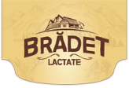
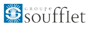
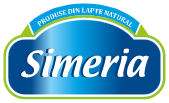
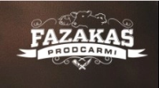
Cunoastem foarte bine problemele cu care te confrunti.
Codul Alimentatiei (Codex Alimentarius) contine o serie de norme si standarde inalte care se adreseaza întregului sector al industriei alimentare. Toate companiile implicate în industria alimentara trebuie sa respecte cele mai stricte norme de igiena existente, dintre toate industriile.
Sistemul MedClyn va scapade stres si orice neplaceri legate de placarea peretilor si tavanelor conform HACCP (Hazard Analysis and Critical Control Point – Analiza Riscurilor în cadrul Sistemelor de Control al Punctelor.
Sistemul MedClyn vă scapă de stres È™i orice neplăceri legate de placarea pereÈ›ilor È™i tavanelor conform HACCP (Hazard Analysis and Critical Control Point – Analiza Riscurilor în cadrul Sistemelor de Control al Punctelor.
MedClyn, acum si în România
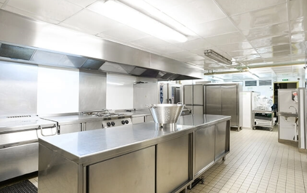
Fie că este vorba de o construcție nouă sau de renovarea construcțiilor și spațiilor existente, Sistemul MedClyn garantează respectarea normelor H.A.C.C.P și ISO 22000, implicit respectarea tuturor normativelor DSV.
Sistemul MedClyn destinat industriei alimentare este compus din material foarte netede, impermeabile, neabsorbante, usor de curatat/dezinfectat si rezistente la substante chimice, ceea ce respecta cele mai întalte standarde de igiena ale Codului Alimentatiei, si implicit normelor A.N.S.V.S.A (Autoritatea Nationala Sanitar Veterinara si pentru Siguranta Alimentelor).
Fie ca este vorba de o constructie noua sau de renovarea constructiilor si spatiilor existente, Sistemul MedClyn garanteaza respectarea normelor H.A.C.C.P si ISO 22000, implicit respectarea tuturor normativelor DSV.
15 ani
Experienta in montaj
200 +
Santiere finalizate
200000 +
M2 de sustem montat
Care este sistemul MedClyn
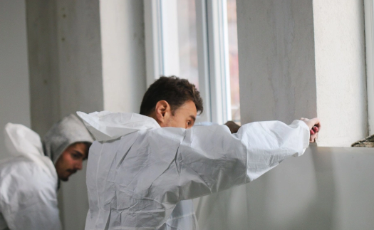
Suprafata placilor este acoperita cu un gel special (GelCoat), un material cu zero porozitate, ceea ce face placile foarte rezistente la substante chimice, caldura, pete, umiditate sau la spalarea cu presiune.
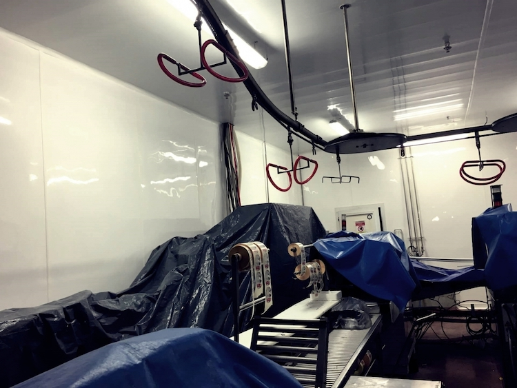
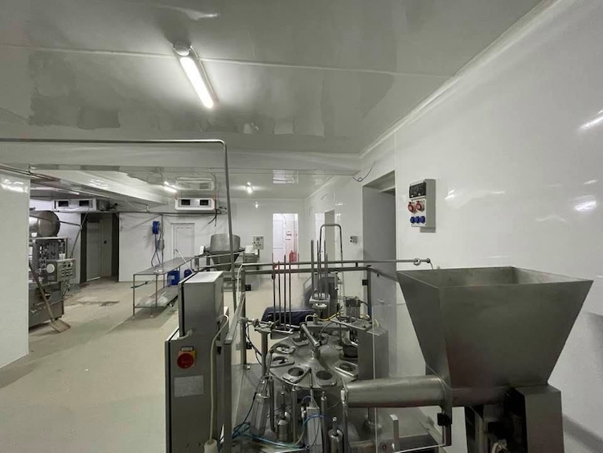
(plinti, coltare interior-exterior, îmbinsri, garnituri de etansare, etc) cu care se placheaza mediile ce trebuie sa respecte standarde înalte de curatenie, igiena si sterilitate.
Placile sunt realizate din rasina de poliester si fibra de sticla, ceea ce le da o rezistenta mecanica foarte mare (rezistenta la socuri, presiune si rupere).

Aprobat DSV
Directia Sanitar Veterinara!
Datorita stratului de gel 100% neted, murdaria pur si simplu nu adera pe suprafete. Curatarea se face extrem de usor cu apa, detergeti, racleta de geamuri, steamer sau pompa de apa sub presiune.
Sistemele etanse de imbinare a placilor fac imposibila infiltrarea apei sau umezelii dincolo de placi. Unii clienti au raportat ca MedClyn se curata de pâna la 4 ori mai usor si rapid decât gresia si faianta.
Aceste caracteristici fac Sistemul MedClyn sa fie foarte rezistent la agenti de curatare puternici (specifici industriei farmaceutice, alimentaresi mediului de sanatate).
Sistemul se monteaza pe suportul existent, fara a pierde din suprafat utila. Placile se lipesc pe pereti si tavane cu adeziv special de tip „mastic”, cu grad de aderenta foarte ridicat.
Care este sistemul MedClyn
(plinÈ›i, colÈ›are interior-exterior, îmbinări, garnituri de etanÈ™are, etc) cu care se plachează mediile ce trebuie să respecte standarde înalte de curățenie, igienă È™i sterilitate.
Plăcile sunt realizate din rășină de poliester și fibră de sticlă, ceea ce le dă o rezistență mecanică foarte mare (rezistență la șocuri, presiune și rupere).
Aprobat DSV
Directia Sanitar Veterinara!
Suprafața plăcilor este acoperită cu un gel special (GelCoat), un material cu zero porozitate, ceea ce face plăcile foarte rezistente la substanțe chimice, caldură, pete, umiditate sau la spălarea cu presiune.
Datorită stratului de gel 100% neted, murdăria pur și simplu nu aderă pe suprafețe. Curățarea se face extrem de ușor cu apă, detergenți, racleta de geamuri, steamer sau pompă de apă sub presiune.
Sistemele etanÈ™e de îmbinare a plăcilor fac imposibilă infiltrarea apei sau umezelii dincolo de plăci. Unii clienÈ›i au raportat că MedClyn se curăță de până la 4 ori mai uÈ™or È™i rapid decât gresia È™i faianÈ›a.
Aceste caracteristici fac Sistemul MedClyn să fie foarte rezistent la agenți de curățare puternici (specifici industriei farmaceutice, alimentare și mediului de sănătate).
Sistemul se montează pe suportul existent, fără a pierde din suprafaÈ›a utilă. Plăcile se lipesc pe pereÈ›i È™i tavane cu adeziv special de tip „mastic”, cu grad de aderență foarte ridicat.
Caracteristici plăci:
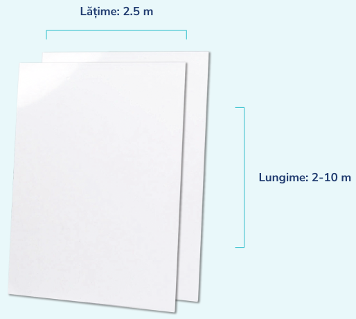
Garantia lucrarilor:
20 de ani
Suprafata vizibila a placilor este acoperita cu gel de înalta densitate, pigmentat ALB stralucitor (Ral 9010), care isi pastreaza culoarea si luciul timp de +20 ani, chiar si în cele mai grele conditii de exploatare: curatare regulata cu dezinfectanti puternici, cum ar fi peroxidul de hidrogen folosit în industria farmaceutica si medicala.
Daca vor aparea probleme în urma utilizarii normale ale Sistemului, echipa MedClyn va interveni si va înlocui portiunile problematice. Oferta care va ramâne valabila timp de 20 de ani de montaj.
Tehnologie folosita cu succes in Franta, Germania si Belgia.
Echipa MedClyn se va
ocupa de întreg procesul.
Cu o experienta de peste 15 ani in montarea
acestui sistem în Franta, echipa MedClyn
se va ocupa de întreg procesul de la A la Z.
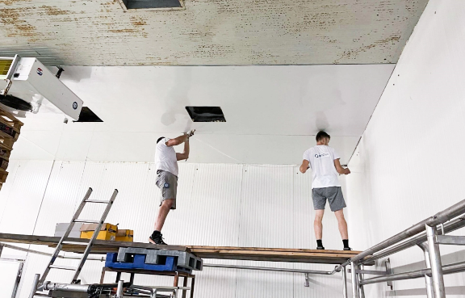
- Vom vizita spatiul în care doriti sa facem montajul.
- Echipa noastra realizeaza toate masuratorile.
- Semnam un contract de colaborare.
- Debitam piesele la depozitul MedClyn.
- Ne întoarcem cu toate materialele si realizam montajul integral.
- Totul fara a opri productia.
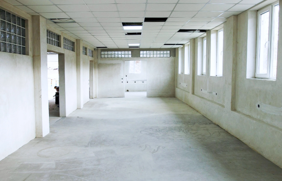
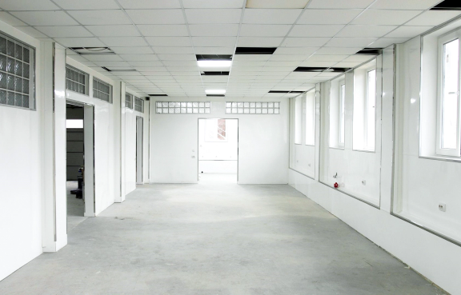
profesionist si cu interferente minime.
Avantajele renovarii cu Sistemul MedClyn
Ce spun clientii nostri?
Cunosteam acest sistem de placare antibacteriana din Germania, si am fost foarte placut surprins sa-l gasesc si in Romania. Pe durata lucrarilor MedClyn, santierul a fost foarte curat, timpul de executie mi s-a parut extrem de rapid comparativ cu ce am mai experimentat anii trecuti cu alte sisteme de renovare, iar pretul este unul extrem de avantajos.
Recomand 100% sistemul si echipa MedClyn!

Fazakas Prodcarmi
MedClyn este un sistem revolutionar fata de toate celelalte sisteme care sunt pe piata. Am placat aproape 1000 de m2 de pereti si tavane, si ma declar foarte multumit de rezultatul final. Montajul s-a realizat intr-un timp record, as spune. Recomand sistemul MedClyn in primul rand celor din industria din care fac parte si eu, dar sunt convins ca este pretabil in orice industrie unde se doreste un mediu igienic si usor de intretinut.
-->> Vezi recenzia video

Lactate Bradet
Vrei si tu sa beneficiezi de Sistemul MedClyn?
Introdu datele tale, si te contactam in cel mai scurt timp pentru a ne da mai multe detalii despre proiectul tau, astfel incat sa-ti putem face un pret foarte bun!
Sau contacteaza-ne direct
la 0733 200 500,
si stabilim la telefon!
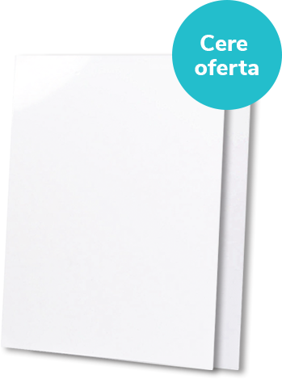
Sau contacteaza-ne direct
la 0733 200 500,
si stabilim la telefon!